2014总结及2015发展规划
段洪义
2015年01月05日
2014已近年尾，回首全年，移动互联网作为科技移动端普及后的产物，所爆发出的新鲜生命力，尤为引人瞩目。
随着几大互联网巨头的移动端布局、各类020的路径探索、新晋热门app的份额争夺，移动互联网领域进入巨头领衔、个性化企业突围的市场变革。
移动互联网时代宣告来临
2014年算是PC互联网和移动互联网的一个分水岭，移动互联网已经实现对PC互联网的全面超越。
2014年1月，美国本土的移动互联网使用率超过传统互联网，移动互联网的网络流量也超过传统互联网。
2014年3月，百度移动搜索流量超过了传统互联网，而且不可逆转，这对国内移动互联网而言，是一个很重要的标志性事件。
传统行业要想生存发展，必须主动拥抱互联网，不断变革创新。移动互联网发展是一个有整合、有拓展、有创新，更广泛、更深入、更规范的过程。全民移动互联时代，现状令人欣喜，未来更令人期待。
我们度过了非常艰难的一年，对于业务而言我们开始了艰难的转型，从传统的工具型应用向关注大众生活的位置服务的转型；回望过去，来之不易；展望未来，我们仍需坚持。
回望2014
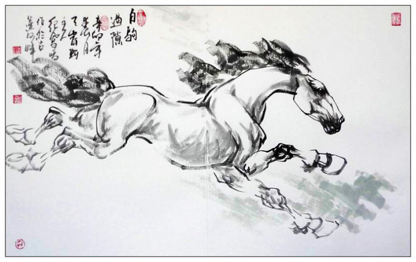
他们在做什么?
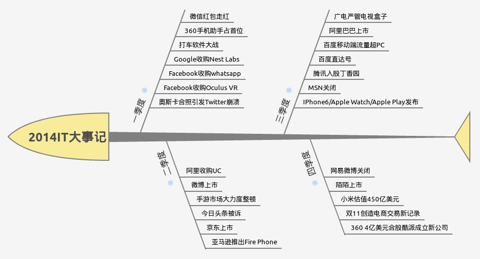
网络安全元年
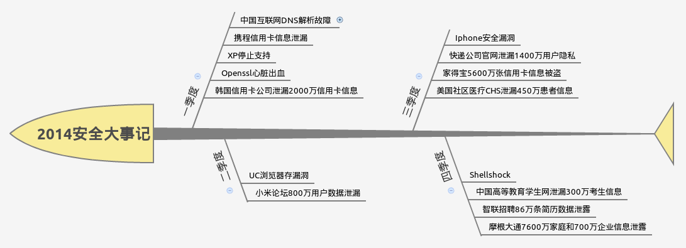
开源软件崛起
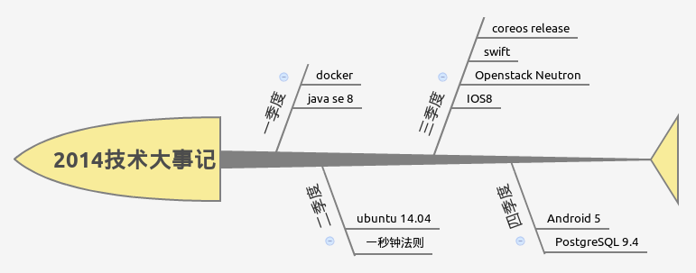
关于悠悠
运维
2014我们重新定义了运维，运维不仅仅是监控和自动化部署，而是软件定义一切。
软件定义一切包括：SDN（网络）、SDDC（数据中心）、SDS（存储）和SDI（基础架构）。
- 多个运维系统进行深度整合。
- 一切行为异步化，管理更多的硬件资源
- 配置文件进行版本管理。
- 尝试软件定义网络与基础架构。
- 硬件监控皆为zabbix，再无其他。
- 软件异常第一时间邮件通知开发。
基础服务
基础服务和虚拟化是实现软件即服务的基础。 2014年我们精简优化了已有基础服务，对bottle进行了去中心化，增加了很多有意思的基础服务。
- bottle目前仅提供三个服务：驾车、公交、步行。
- swift提供多租户支持。
- 精简实体机，内网大量使用基础云服务。
- 为SNS设计了大量的可复用的基础服务。
搜索
cloudsearch是一个基于Lucene构建的,分布式，RESTful位置搜索服务。 cloudsearch设计用于位置检索服务，能够达到实时搜索，稳定，可靠，快速，使用方便。
- 采用对POI名称进行一元分词，兼容数据库检索。
- 引入词位检索功能，来避免一元切割造成的召回率高而准确率低的情况。
- 采用分布式结构来解决一元切分后导致的系统变慢问题。
- 提供基于热度联想搜索功能。
- 实时小批量更新数据。
- 大批量、快速更新数据。
- 利用整个集群在不停机的情况下，更新全部数据。
云
任何一个使用基于互联网的方法来计算，存储和开发的公司，都可以从技术上叫做从事云的公司。 “云”其实是互联网的一个隐喻，“云计算”其实就是使用互联网来接入存储或者运行在远程服务器端的应用，数据，或者服务。
2014年，我们的发布的内网服务大部分使用IAAS。未来的路还很长，但是我们已经走出了第一步，运维的一小步，筑梦园的一大步。
WEB
对于目前的web团队来讲有两个基本方向，Ｍobile和PC。 Mobile浏览器的性能是不太乐观，Web程序怎么也无法做出APP那样的用户体验，对于一些功能需求低的网页使用Web实现非常合适。
- 响应似设计融入了日常的网页设计。
- 对于一些功能需求低，简单的App功能使用Web实现。
- 将HTML5引入了Mobile Web。
关于设计
风险驱动做适度的设计。 至下而上的构建，尽量不把架构设计活动从实现分离出来，同时减少甚至忽略架构文档。
- 开发人员开始学会基础的软件分层。
- 开发人员开始懂得风险驱动设计的意义。
- 设计的已经在潜移默化的影响到每一个人。
关于团队
走了很多人，来了一些人；学会了一些道理。好的团队是目标一致的团队...
- devops
- 开发
- 测试
- 设计
关于遗憾
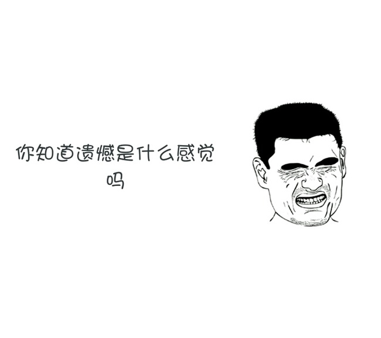
遗憾
前进的道路总会有一些遗憾，遗憾证明我们并不完美，我们仍需不断努力……
- 对风险的认识不足
- 我们的团队技术栈并不成熟
- 测试用例覆盖度远远不够
- 很多很多人为了生活而工作
- 设计会议中规定的约束执行的并不彻底
2014年结语
2015可以做梦
关于运维

软件定义一切
我将TripleO之前的运维称为运维的1.0时代，而TripleO之后的运维称为运维 2.0 新时代。 2.0 时代的一个显著特点是任何运维行为都有API，通过在外部编写程序我们可以主导运维的整个过程。
- 自动把系统和软件安装好，不管是物理机还是虚拟机。
- 对机器上安装的程序进行配置并且进行统一管理和收敛。
- 掌控集群的状态，不管是资源状态还是安装状态，只要是状态我们都需要知道。
- 在集群上方便的安装软件。
- 编写一个剧本将资源的调度和软件的配置协调起来。
关于云
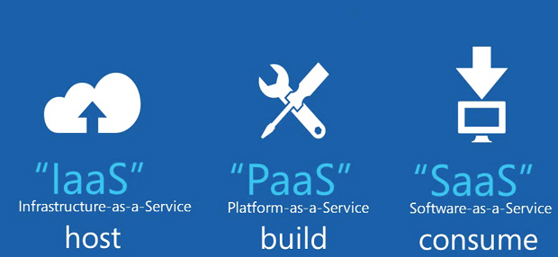
悠悠云
关于2015，我们已经可以眺望到很多新兴的技术，其中最热门的无疑是大数据与物联网，而这两种技术的发展都离不开云计算这种基础技术的进步。
- 像编写剧本一样部署软件。
- 一切状态可监控。
- 自动故障恢复。
- 优雅的扩容与回滚。
基础服务
没有IAAS的PAAS就不能称其为PAAS，没有PAAS的SAAS就不能称其为SAAS。
- 将大量基础服务迁移到PAAS。
- 避免服务孤岛，一切皆为API。
- 提升基础服务的安全性，注意隔离与保护。
关于大数据
悠悠大数据容量图
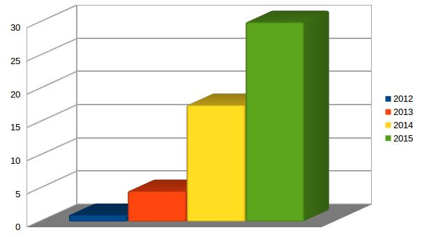
大数据
拨开云层，探究真相，寻找大数据真正的价值。
- 在机器学习领域应用大数据。
- 掌握大数据的标准，入口、汇集和整合过程。
- 让人与人、人与物、物与物之间实现高效撮合与匹配。
- 组建专门的大数据团队，为公司与产品的运营提供价值。
关于端
未来的服务，将形成以智能化商品为“端”，以远端后台为“云”的服务模式。 未来已经到来，只是还不显著。事实上，这样的“云+端”模式已经出现在很多服务中。
- 测试驱动设计、测试驱动开发。
- 推进模块化设计，在SDK层面上复用代码。
- 跨平台软件开发，复用各端基本业务逻辑。
- 推动构建工具的使用，自动测试，在构建层解耦。
- 设计js与IOS/Android Message Framework。
- 更多的HTML5项目/模块，尝试使用统一的浏览器渲染内核。
关于团队
建立学习型团队
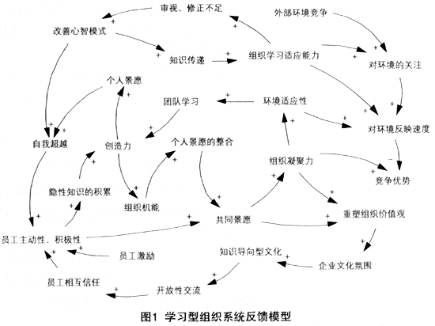
团队技术栈
关于设计
架构设计师定义的仅仅是骨架或者约束。真正的设计是每个人的事情，蝴蝶效应告诉我们表面看来是细小的变化可能会影响整个系统的属性。
- 系统模块化设计。
- 风险驱动做适度设计。
- 促进设计的民主化。
关于模块化
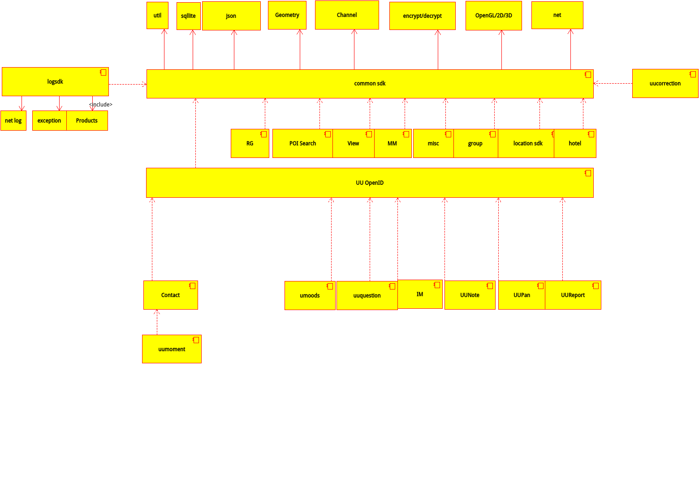
服务系统架构图
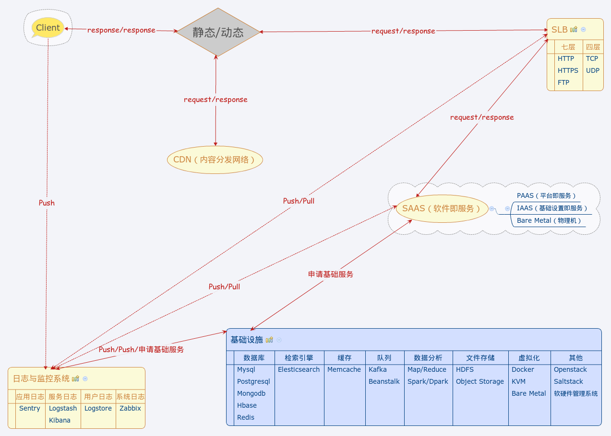
业务总览
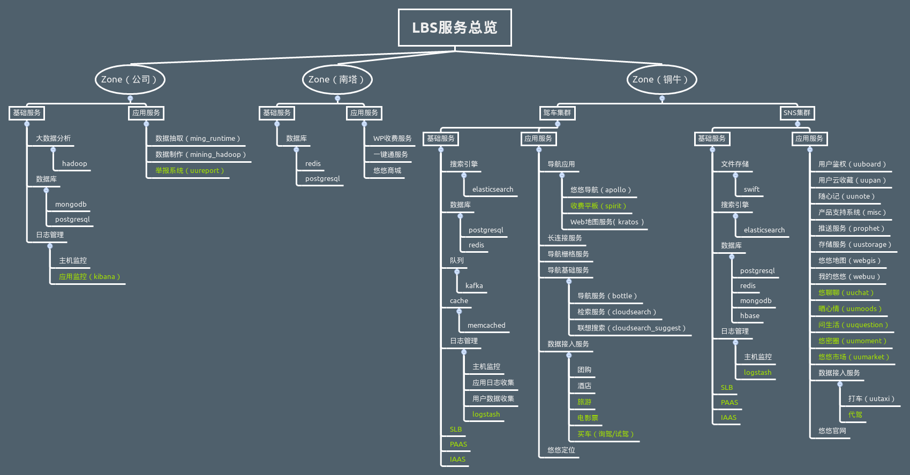
Simple is better
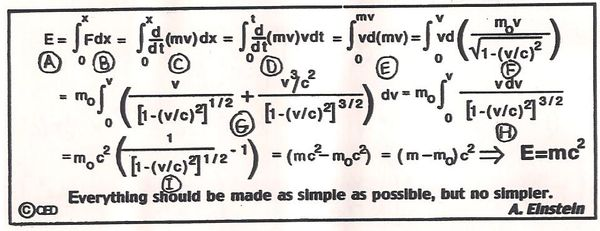
关于信息安全
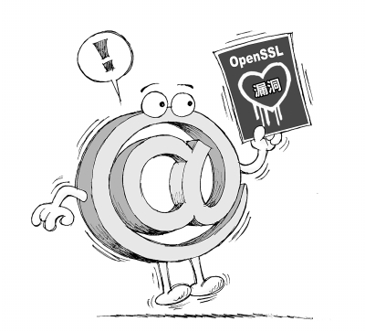
信息安全
信息安全与风险的领导者们必须全面掌握最新的科技趋势，才能规划、达成以及维护有效的信息安全与风险管理项目。 移动化、云端、社交与大数据所产生的“力量连结(Nexus of Forces)”在创造全新商机的同时也带来了更多令人头疼的破坏性问题。
- WAL日志存储与备份。
- 云端访问安全代理服务。
- 大数据信息安全分析智能判断威胁。
- 使用沙盒技术将每个服务与应用之间进行隔离。
2015 Keywords
在2015年，敢问路在何方？路在脚下！
- 智能硬件
- 物联网
- 机器学习
- 云端架构
- 软件定义一切
- 大数据分析
- TDD
- 跨平台